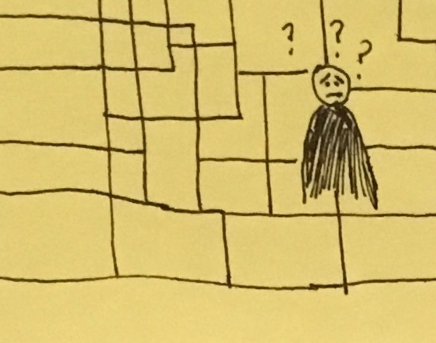
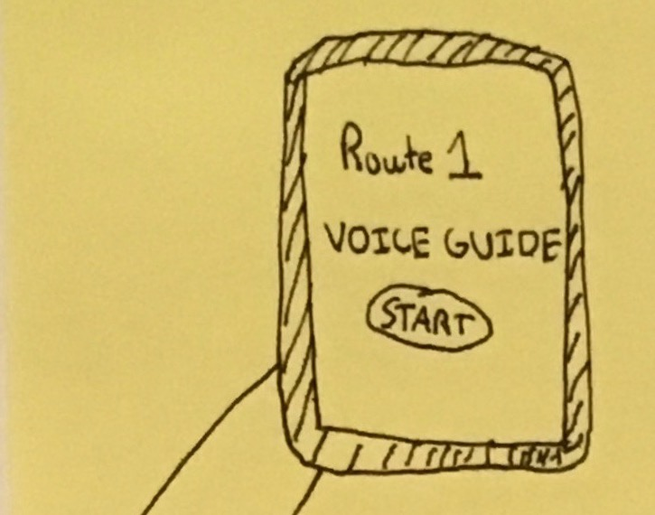
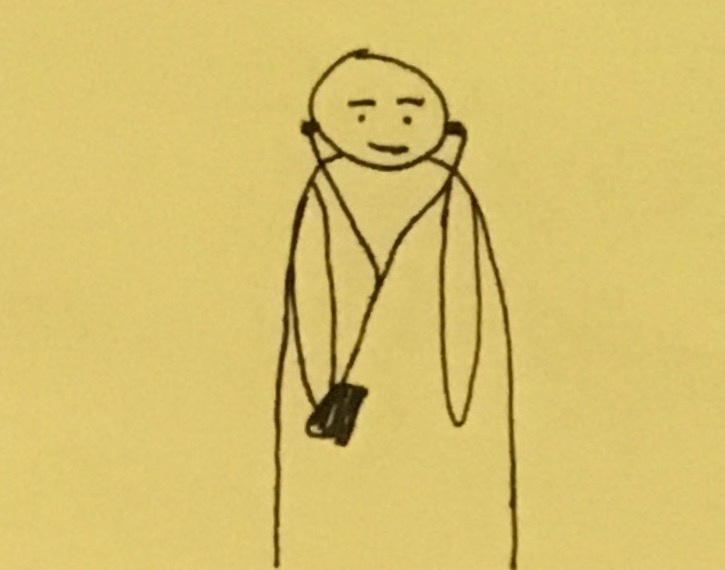
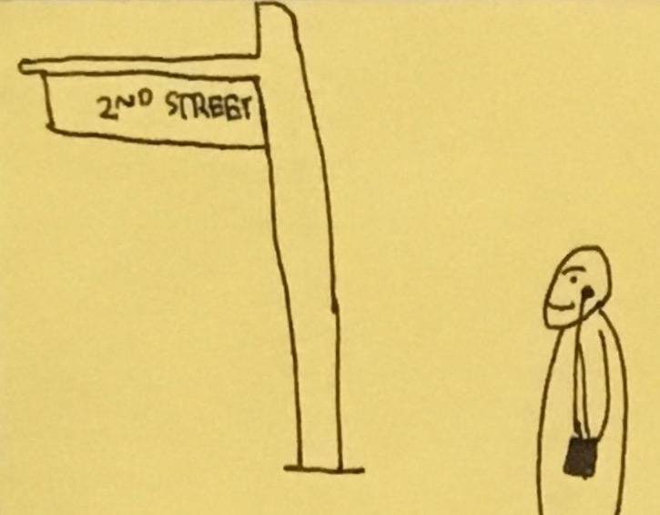
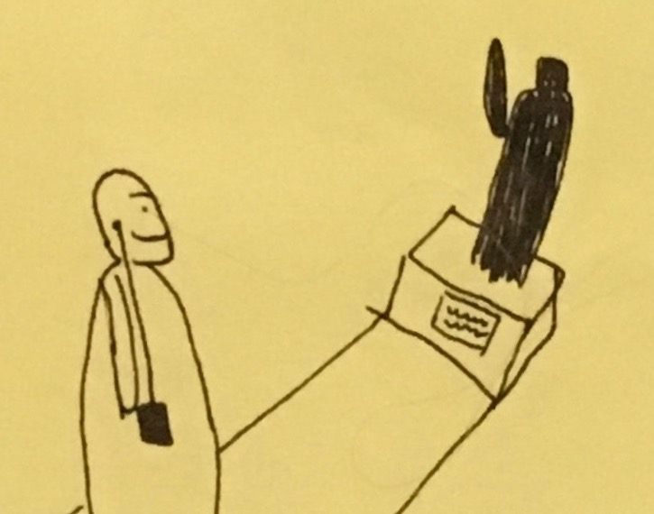
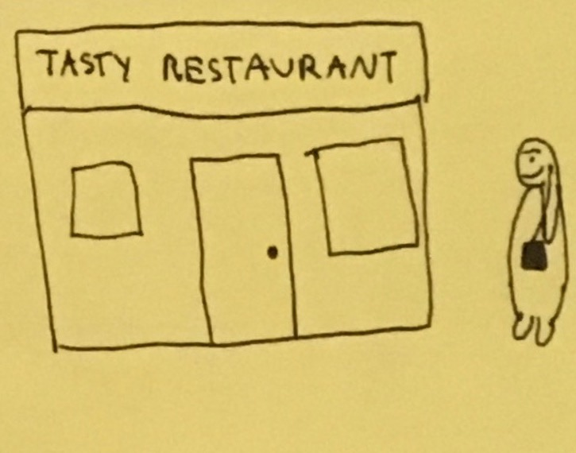
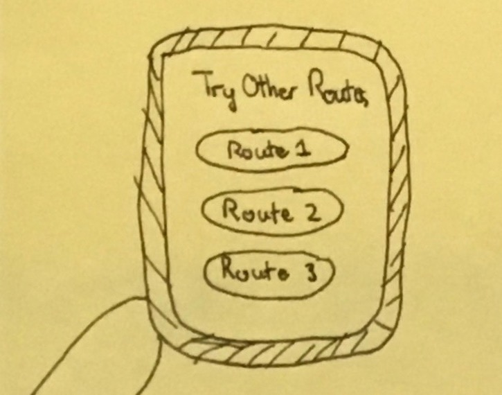

Design Question: How might we make travelling abroad easier for the young lone traveller?

1. Traveller is utterly and completely lost.

2. But wait! The traveller has this voice guide.

3. The voice guide is downloaded beforehand.

4. The voice guide gives directions.

5. It also includes points of interest en route.

6. It will also have restaurant suggestions.

7. The traveller can choose between different routes.
Share of Work: one interview, one design concept
Research Methods: Interviews to determine scope of design question
Participant Group: Students who mostly travel alone, including
IL, 20 year old female who studied abroad in the UK
AZ, 22 year old female who went sightseeing in Turkey on her own
BC, 21 year old male, international student at Rutgers
Informed Opportunities for Design:
1. Facilitating the sharing of customs Young travellers want to prepare for local customs, and like when locals explain the customs to them.
"I thought TV shows would prepare me for customs, but they didn't." - IL
"I wish I knew someone who could have taught me [custom]" - AZ
2. Spontaneous plan generation Young people dislike planning while traveling, but see it as necessary.
"I had to prepare or else I would be totally lost" - AZ
"Preparing is boring and takes a lot of time" - BC
"Planning is a boring but necessary evil" - IL
3. Accessibility of data Young travelers often seek out public wifi, and are limited by accessibility to the Internet. "I would specifically seek out places with open wifi networks and revisited those places" - AZ
4. Finding travelers who speak the same language Young travelers want to meet other people to travel with, but can be difficult with language barriers.
"I only travel alone in countries where I know the language" - IL
"Language has been a barrier for me in making friends abroad" - BC
"I wish I could find English speakers while abroad" - AZ
5. Finding others to dine with Young travelers prefer to eat with others.
"Eating alone is boring" - IL
"You can't try a variety of foods when alone" - BC
"Eating is supposed to be social" - AZ
Design Concepts:
1. Voice Guide: A tour guide in your pocket (own idea, as illustrated above) Opportunties: Accessibility of data, spontaneous plan generation, sharing customs
2. Data AR: Explore and collect data, Pokemon Go style Opportunities: Accessibility of data, spontaneous plan generation
3. Arrival Package: A travel care package Opportunities: Spontaneous plan generation, sharing customs
4. Match-up Pre- or live match-up (idea formed in a group meeting) Opportunities: Finding similar travelers, finding others to dine with